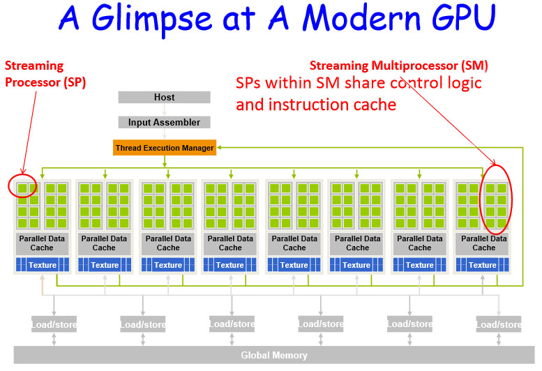
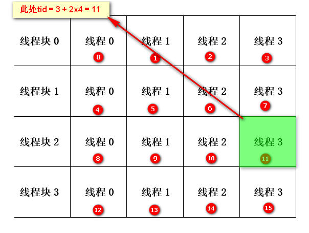
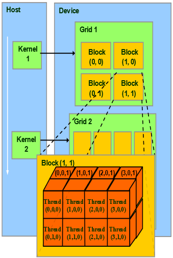
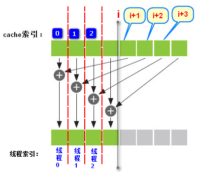
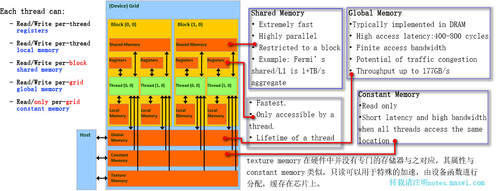
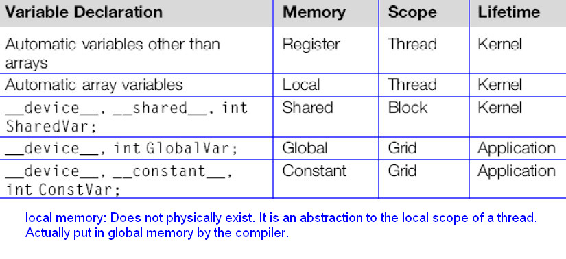

关于|准备
本为内容来源于《CUDA by Example.An Introduction to General-Purpose GPU Programming》学习整理，网上中英文版都有，其源码以及本文测试源码在github。部分内容来源于CUDA官方文档http://docs.nvidia.com/cuda以及其他网上相关资料，官方文档右上角的搜索不是非常好用，如果没有搜索到你所需要的关键字可以定位到所需文档后试试ctrl+f,例如dim3的概念。这里是一个中文版本的NVIDIA_CUDA_Programming_Guide_2.0Final。
新人入坑看这里，系统学习强烈推荐直接看官方这份编程指南：http://docs.nvidia.com/cuda/cuda-c-programming-guide/index.html，本文后期补充的大量内容都来自该指南。
看完指南再看官方的进阶文档，最佳实践指南：http://docs.nvidia.com/cuda/cuda-c-best-practices-guide/，这些看完你也就完全入门了，并且跟上了CUDA的最新技术发展。
书上使用的是C语言，为了顺便练习下C++且本文主要是为了以后自己查询所用，所以可能会有混用C/C++的情况，如果你不慎看到本文且发现了有问题的地方请及时与我联系，在以后的学习过程中我也会逐渐更正。
特别推荐偶然间在网上找到的纽约大学的CUDA课程，地址在Graphics Processing Units (GPUs): Architecture and Programming。该页面底部也推荐了一些其他非常好的GPU相关的编程网站。
本文没有介绍Windows下环境安装等相关的内容，因为NVIDIA基本上干好了一切，这应该就是商业公司的好处。CUDA ZONE上你可以找到所有CUDA环境及官方相关资料。windows下直接下载官方CUDA Toolkit安装即可，Linux下建议安装配置好Nvida显卡驱动且确定驱动正常运行后直接下载官方对应二进制包安装即可，这里建议安装个snapper并在你不确定是否能够完美配置好环境的情况下创建个快照，方便回滚。如果只是学习简单实例，且开发的文件较少并且熟悉vim,可以考虑使用nvcc+vim，不需要启动庞大的VS，当然VS也足够好用。以下是我用的vim针对CUDA的绑定，Ctrl + F8或F8一键编译并运行，其中Ctrl + F8会默认将CUDA官方示例中的头文件加入编译时的头文件查找路径中，方便编译官方示例，如果不是编译官方示例，直接使用F8即可。添加--ptxas-options=-v编译选项是为了在编译时输出核函数所使用的register和shared memory，方便自己根据需要调整block尺寸。
Linux下双显卡配置，可以参见：http://notes.maxwi.com/2017/02/26/ubuntu-cuda8-env-set/
1 | "-- For CUDA development setting -- |
CUDA C++简介及基本概念

硬件层面上CUDA架构中的GPU计算单元由很多的SM（Stream Multiprocess）组成，而每个SM又由多个CUDA Core（对应于single process）组成。这跟CUDA编程中的线程（thread）、线程块（block）、线程格（grid）并无直接的一一对应关系，CUDA编程中为了便于线程的调度和管理采用多维的方式来组织线程。
2.1 CPU中执行的代码称为主机代码，GPU中执行的代码称为设备代码,在GPU设备上执行的函数通常称为核函数（kernel）。一个程序中可以包含多个核函数。
2.2 通过__global__ type func()来声明可以从主机上调用并在设备上运行的代码，通过__device__ type func()来声明只能从其他__device__函数或者从__global__函数调用而需要在设备上执行的代码，也就是说其声明的函数只能在GPU上调用。CUDA中的并行化即是指这个核函数在程序启动后可以由多个线程同时来执行这个核函数一次。
2.3 通过func<<<N,1>>>()来调用需要在GPU中执行的代码。其中参数N表示设备在执行该函数时使用的并行线程块数量，参数1表示CUDA运行时在每个线程块中创建的线程数量。
2.4 GPU的大致使用流程总结如下：
- 1.使用关键定
__global__声明核函数，eg:__global__ void kernel(int a, int b, int *c); - 2.定义需要在GPU中使用的所有数据指针，eg:
int *dev_a; - 3.然后通过
cudaMalloc为所有需要设备内存的数据指针分配设备内存，注意cudaMalloc()分配的是global memory,也就是全局内存。eg:cudaMalloc((void**)&dev_a, sizeof(int)); - 4.通过
cudaMemcpy将GPU代码中需要使用到的主机数据复制到GPU，eg:cudaMemcpy(dev_b, b, N*sizeof(b), cudaMemcpyHostToDevice); - 5.调用GPU核函数，eg:
kernel<<<1,1>>>(1, 2, dev_b); - 6.调用后将需要在主机中使用的数据通过
cudaMemcpy从设备内存复制到主机内存中使用，eg:cudaMemcpy(b, dev_b,sizeof(int), cudaMemcpyDeviceToHost); - 7.最后调用
cudaFree释放在GPU中分配的内存，eg:cudaFree(dev_a);
举例如下：
1 |
|
这里特别强调，如果你发现本文中带有中文注释的示例无法通过编译，请手动设置源代码文件格式为utf-8 with bomb, vim设置方法为:set bomb,查看当前文件是否带bomb用:set bomb?,EmEditor另存时选择UTF-8 with signature,其他编辑器类似。当然VS通常默认应该是带bomb，否则请认真检查。这个问题花了我一下午尝试，怀疑是nvcc的兼容问题或者BUG，因为在linux下无论是带不带bomb，都能正常编译，但在windows下如果带有中文注释必须带bomb，或者将每一行带中文注释的行前后各放置一个空行。
2.5 cudaDeviceProp结构体中包含了当前CUDA设备的几乎所有属性，可以通过cudaGetDeviceCount(&count)查询当前计算机中CUDA设备数量，使用cudaGetDevice(&dev)获取当前使用的设备ID，设备ID从0开始编号。使用cudaGetDeviceProperties(&prop, i)函数来获取ID为i的CUDA设备的属性。使用cudaChooseDevice(&dev, &prop)可以获取符合prop要求的设备ID到dev，使用cudaSetDevice(dev)可以设置使用ID为dev的对应设备。有关设备属性的具体内容及用法参见http://docs.nvidia.com/cuda。
补充：可以使用NVIDIA官方Toolkit自带的工具nvidia-smi来查询GPU信息，功能强大,该工具默认安装路径为C:\Program Files\NVIDIA Corporation\NVSMI\nvidia-smi.exe，详情查看官方DOC。也可以在通过指定环境变量CUDA_VISIBLE_DEVICES来设置对于系统程序CUDA设备的可见性
2.6 设备指针使用限制：
- 可以将
cudaMalloc()分配的指针传递给在设备上执行的函数。 - 可以在设备代码中使用
cudaMalloc()分配的指针进行内存读/写操作。 - 可以将
cudaMalloc()分配的指针传递给在主机上执行的函数。 - 不能在主机代码中使用
cudaMalloc()分配的指针进行内存读/写操作。 - 总之，主机代码只能访问主机内存，设备代码只能访问设备内存。
CUDA C并行编程的一维线程管理
3.1 CUDA使用线程格管理线程，线程格可以是一维的线程块集合，也可以是二维的线程块集合。核函数的每个副本都可以通过内置变量blockIdx来判断哪个线程块正在执行它，即确定线程块的索引。也可以通过gridDim来获得线程格中所包含的线程块的数量,通过blockDim可以获得线程块中所包含的线程的数量。
对于一个一维的线程格来说，不需要特别定义，可以直接使用blockIdx.x来获取当前线程块的索引，此时对应的核函数调用为kernel<<<N, 1>>>();即启动N个线程块；或者使用threadIdx.x来获取当前线程块中线程的索引，此时对应的核函数调用为kernel<<<1, N>>>();即启动一个线程块，该线程块启动N个线程。
3.2 GPU利用一维线程格进行矢量求和的例子:
所有的tid都是为了确定输入数组中的一个全局偏移，用于确定当前执行该核函数的线程应该计算数组中哪个元素的值,所以它必须要包含在它之前所有线程的索引值。
1 |
|
线程协作|共享内存
4.1 硬件对线程块数量及线程块中包含的线程数量都有限制，具体限制可以通过CUDA API内置的结构体设备属性cudaDeviceProp查询。
4.2 线程格表示当前运行的线程块集合，线程格可以是二维，对应的内置变量gridDim.x中保存了线程格中每一维中的线程块数量；线程块表示当前运行的线程集合，线程块可以是三维的，对应的blockDim.x中保存了当前运行的线程块中每一维的线程数量。
4.3 当需要多个线程块并且每个线程块又包含多个线程时，索引计算方法为：int tid = threadIdx.x + blockIdx.x * blockDim.x;，其中索引tid相当于一个以线程块为行，线程为列的二维集合中某格所在的索引值。所以threadIdx.x表示当前线程所在线程块中某行的索引，blockIdx.x表示线程块索引，blockDim.x表示每个线程块中的线程数量。gridDim.x表示当前线程格中线程块的数量，线程格其实就是当前正在运行的线程块集合。如下图所示:


4.4 在确定启动线程块的数量时记得考虑避免出现启动0个线程块的情况。例如若要每个线程块启动128个线程，假如我们总共需要启动N个并行线程，那么对应的线程块数量应为N/128。这样将导致当N < 128时我们启动的线程块数量将为0，所以应该修改线程块数量为(N+127)/128，即计算大于或等于N的128的最小整数倍，同时不需要调用ceil()函数。
4.5 由于gridDim.x中存放了当前线程格中线程块的数量，blockDim.x中存放了当前线程块中线程的数量，所以blockDim.x * gridDim.x表示线程格中正在运行的线程块总数。
4.6 举例说明同时启动多个线程块及多个线程计算上述矢量求和的例子：
此处只给出核函数并说明函数调用。
1 | const int N = 10000; |
4.7 使用数据类型dim3可以定义多维block以及thread。例如可以定义一个NN的二维线程块，每个线程块中含有MM的线程，方法为
1 | dim3 block(N, N); //默认第三维为1 |
针对上面的普通数组加法的程序，可以修改核函数为
1 | __global__ void add(int *a, int *b, int *c) |
4.8 以下为书上的一个实现1024x1024大小波纹动画效果的代码，将每个线程对应于一个像素，具体内容见注释。
1 |
|
4.9 共享内存： CUDA可以在声明时通过__shared__关键字,使变量驻留在共享内存中。共享内存中的变量可以被同一线程块中的线程所共享，所以可以通过共享内存来实现同一线程块中的线程之间进行通信，且共享内存位于物理GPU上，其访问延迟要远远低于普通缓冲区。使用方法即是将__shared__添加到变量声明中。
4.10 CUDA可以使用线程同步机制__syncthreads();对线程块中的线程进行同步。该函数可以确保同一线程块中的所有线程在执行完该语句之前的所有语句之后才会执行其下一条语句。使用__syncthreads();时一定要时刻记住避免由于线程发散所引起的线程永久等待问题。线程发散是指由于某种判断导致某些线程需要执行一些指令，而其他线程不需要执行这条指令的情况。例如：if (threadIdx.x % 2) myvar = threadIdx.x;这将导致奇数线程需要执行，而偶数线程不需要执行。但在这个时候如果将__syncthreads();函数放在if语句中，就必然会导致有些线程需要执行到__syncthreads();的情况，此时当奇数线程执行到这里时它需要等待其他线程也执行到该语句，但由于if语句的判断，会导致它永远等不到偶数线程来执行__syncthreads();函数，这样就会引起处理器挂起的情况。
4.11 时刻记得CUDA是使用GPU进行并行计算，所有线程格所组织的线程块中的所有线程都在同时执行同一个核函数。在对共享内存写入时要记得确保所有线程都已经执行完成，避免发生竞态条件。竞态条件是指对于共享内存中的数据，有可能线程A和线程B会同时对该共享数据进行操作，那么，在这种情况下代码的执行结果将是不确定的。CUDA中避免同一个线程块中线程访问shared memory出现竞态条件的方法是使用__syncthreads()在读取shared memory的值之前进行线程同步。
4.12 关于书上点积运算的例子中在求和归约运算时需要使用__syncthreads();的解释，详细看下图以及4.13中实例分析，注意当前该线程块中的所有线程都在运行这个核函数，且每个线程块都会有其自己的一个共享内存区域，只有同一个线程块中的线程之间才能共享该线程块的共享内存。

由于所有线程同时并行运行所以并不一定线程0就先计算，但对应关系一定是这样，且通过与i比较来筛选出索引小于i的线程进行计算。每次循环线程数减半，直到最后所有的值都加到cache[0]中
4.13 threadIdx.x是个内置变量，存储了当前线程所在线程块中的索引，也就是说它是核函数中唯一能表征当前时刻该核函数正在被哪个线程所执行，且该变量是个常量。它的值是相对于线程块的，在同一个线程块中其值是唯一的，每个线程块都会存在对应值相等的threadIdx.x。将其与线程块和线程格结合起来便能确定出一个唯一的线程索引。
4.14 点积运算实例的详细说明，其中用到了一些之前没有用过的方法，程序还有很多可以改善的地方：
1 |
|
更多关于共享内存的内容参见官方DOC: http://docs.nvidia.com/cuda/cuda-c-programming-guide/index.html#shared-memory
常量内存|事件
5.1 CUDA使用关键字__constant__声明常量内存中的变量，常量内存只读，但效率高且可以节约内存带宽,所以常量内存适合存放需要大量只读调用的常量数据。声明常量内存时必须指定数组大小，eg: __constant__ type arr[15];。cudaMalloc()分配的为全局内存，即设备内存。
5.2 将数据从主机内存复制到GPU上的常量内存需要使用cudaMemcpyToSymbol()函数，eg: cudaMemcpyToSymbol(tar, src, size);不需要指定方向。
5.3 CUDA架构中，线程束是指一个包含32个线程的集合(高版本的指令集支持指定线程束数量及重新排列线程束中线程的顺序)，同一个线程束中的线程会以“步调一致(Lockstep)”的形式执行,即在程序中的每一行，线程束中的每个线程都将在不同的数据上执行相同的指令，有点类似SIMD。半线程束即指线程束的一半，也就是16个线程。
5.4 常量内存具有两个特点：
- 对常量内存的单次操作可以广播到其他邻近的15个线程中，也就是每次操作常量内存就相当于半线程束在同时操作常量内存，所以这将节约15次读取操作。
- 常量内存的数据将被缓存起来，因此对相同地址的连续读操作将不会产生额外的内存消耗。
5.5 常量内存是一把双刃剑因为当半线程束需要访问常量内存中的不同数据时，这16次不同的读取操作会被串行化，而如果是从全局内存中读取，则会以并行方式同时进行。
5.6 CUDA使用事件来测量性能，事件本质上是GPU时间戳，由于可能会执行一些异步函数调用，所以在读取时间记录之前必须使用cudaEventSynchronize()函数对事件进行同步。CUDA事件是直接在GPU上实现的，所以它不能用于同时包含设备代码和主机代码的混合代码。eg:
1 | cudaEvent_t start, stop; //声明两个事件时间变量 |
纹理内存和表面(Texture and Surface Memory)
Texture Memory
6.1 纹理内存是CUDA中的另一种只读内存，同样缓存在芯片上，在特定的模式中可以提高性能并减少内存通信量，因为虽然他的分配实际也是在global memory，但它有cache，只有当cache没有命中时才会去访问device memory。它的特点是其专门用于那些在访问模式中存在大量空间局部性的图形应用程序而设计。这里的空间局部性是指某个线程读取的位置可能与邻近线程读取的位置“非常接近”，这些位置不一定要像常量内存那样都是连续的而是指可以前后左右相邻。所以纹理内存非常适合用于图像的处理。纹理内存也可以被layered，称为Layered Textures
6.2 CUDA中有2种不同的方式来存取纹理内存和surface内存：
- 纹理引用API（texture reference API），该API支持所有设备，也就是本文原来介绍的方式。该方式的纹理引用创建在编译期，所以需要在创建时指定大小。
- 纹理对象API（texture object API），该API只支持计算能力3.x以上的设备。纹理对象的创建发生在运行时。
Texture Object API
该方式使用纹理内存的过程主要分为4步：1）分配device memory，2）通过device memory创建纹理对象，3）访问纹理内存，4）销毁纹理对象并释放device内存。
Texture对象使用函数cudaCreateTextureObject()从源描述结构体cudaResourceDesc创建，并通过texture描述结构体cudaTextureDesc指定texture对象的参数。该函数的原型：
1 | __host__ cudaError_t cudaCreateTextureObject ( cudaTextureObject_t* pTexObject, const cudaResourceDesc* pResDesc, const cudaTextureDesc* pTexDesc, const cudaResourceViewDesc* pResViewDesc ) |
其中cudaResourceDesc中可以用于指定device memory内存地址，以及相应的内存类型。当用于二维图像时，通常可以将cudaResourceDesc::resType设置为cudaResourceTypePitch2D，然后设置其相应的宽高等，下面是一个实例中对于YUV图像处理时使用纹理内存的cudaResourceDesc的初始化方法：
1 | int hhSrc = nSrcHeight * 3 / 2; // nSrcHeight为原图像的高 |
关于该函数的详细描述可以看这里：http://docs.nvidia.com/cuda/cuda-runtime-api/group__CUDART__TEXTURE__OBJECT.html
NV官方一个示例的完整代码及注释如下：
1 | // Simple transformation kernel |
Texture Reference API
注意该模式下的texture引用变量只能为全局变量，不支持通过参数的形式传递为局部变量。
该方式下的纹理内存使用主要分为4个步骤：1）device memory分配，2）创建texture，并与分配的显存绑定，3）读取纹理内存，4）解绑并释放分配的显存。
创建texture的模板原型如下，其中Type和ReadMode两个为可选参数，具体作用参考官方文档。
1 | texture<DataType, Type, ReadMode> texRef; |
此处为一维纹理内存使用过程举例：
显存绑定：首先需要将输入的数据声明为texture类型的引用,eg: texture<float> texIn;表示声明一个float类型的纹理引用，引用名为texIn，纹理引用必须声明为文件作用域内的全局变量。注意这里仅仅是声明了一个引用，并没有分配内存空间。然后就需要使用cudaBindTexture()函数将引用变量绑定到内存缓冲区，此处的内存缓冲区依然需要使用cudaMalloc()来分配，cudaBindTexture()做的工作有将指定的缓冲区作为纹理内存来使用以及将纹理引用作为纹理的“名字”。
读取：纹理内存分配完成之后就可以使用了，纹理内存的读取不能像数组那样直接使用下标引用,而是使用内置函数text1Dfetch(cudaTextureObject_t texObj, int x)进行读取，texObj表示纹理对象，x表示整型纹理坐标，其实就是用全局偏移offset来指定的方向。
释放：使用内置函数cudaUnbindTexture()解除与纹理的绑定然后再释放内存即可。
eg:
1 | texture<float> texIn; //声明一个float类型的纹理引用 |
声明的纹理引用可以在使用完之后解绑定，然后再将其与其他内存空间进行绑定，cudaBindTexture()的函数原型为
1 | cudaBindTexture ( size_t* offset, const textureReference* texref, const void* devPtr, const cudaChannelFormatDesc* desc, size_t size = UINT_MAX ) |
官方文档建议使用二维的纹理内存。Read more at: http://docs.nvidia.com/cuda/cuda-c-programming-guide/index.html#texture-memory
NV官方与上面texture对象的方式使用纹理内存一样功能的一个示例：
1 | // 创建全局的texture引用 |
6.3 二维纹理内存，由于此处是在处理DIM x DIM大小的图像问题，所以这里使用二维纹理内存更加合适，官方也建议尽量使用二维纹理内存。首先要清楚这里处理热传递问题有点类似5-point stencil的问题，即以坐标(x, y)为中心，然后对其上下左右的数据进行调用，刚好也是个二维平面。二维纹理内存的使用同样需要一维中的三大步。只是内置函数变化一下，而且不需要再使用全局偏移来定义位置，因为内存刚好也是二维的。eg:
1 | texture<float, 2> texIn; //声明一个float类型的二维纹理内存引用 |
关于纹理内存使用的官方DOC：http://docs.nvidia.com/cuda/cuda-driver-api/group__CUDA__TEXREF.html#axzz3ggCvFftU
6.4 纹理内存选择一维还是二维应根据具体情况而定，哪个coding起来更方便就选择哪个，其对基本没有区别。
Surface Memory
Surface Memory的使用与纹理非常像，以后用到了再了解吧，官方使用文档在此http://docs.nvidia.com/cuda/cuda-c-programming-guide/index.html#surface-memory
图形互操作性
7.1 主要介绍CUDA可以执行通用计算将以前需要依赖CPU进行的图像渲染工作由GPU实现。这样的好处是首先GPU的并行性使得速度通常会更高，另一方面可以使CPU空闲出来做其他工作。这里主要介绍了CUDA与OpenGL的图形互操作，以及CUDA C核函数与OpenGL渲染函数之间共享数据。所以用到了大量OpenGL的知识，而且也主要是为了实现由GPU进行界面渲染，以后有需要再补充。
原子性
8.1 计算功能集就是Compute Capability表示NVIDIA GPU所能支持的最高指令集版本。可以通过cudaDeviceProp prop结构体的prop.major和prop.minor来查看，我的机器上是5.0，由于计算功能集是向下兼容的，所以高版本支持所有低版本的指令操作。
8.2 可以通过为nvcc指定参数来告诉编译器所需要的最小计算功能集。例如你编写的程序中用到了3.5版本的某个新指令，而该指令在3.5以下版本中没有，那么可以在编译时加上参数-arch=sm_35，这样做的另一个好处是可以让编译器使用高版本的编译优化。eg: nvcc test.cu -o test -arch=sm_11
8.3 原子操作是指由于某些操作的执行过程不能分解为更小的部分，而必须连续的不能被其他线程所中断地执行，我们将满足这种条件限制的操作称为原子操作。例如x++;，即是执行三个步骤：读取x-修改x-写入x，这三个过程一旦被打断，有可能最终获取一个不正确的x，所以就必须确保这三个过程是一个整体的操作。由于GPU线程的并行性导致这种情况很容易存在。
8.4 CUDA中可以使用cudaMemset()函数在GPU上为某块内存指定初始值，类似与C/C++中的memset()，但其返回值为错误码。memset()函数原型为说明：void *memset(void *s, char ch, unsigned n); 将s所指向的某一块内存中的每个字节的内容全部设置为ch指定的ASCII值,块的大小由第三个参数指定,这个函数通常为新申请的内存做初始化工作。
8.5 注意书上在验证GPU计算的直方图与CPU计算的直方图是否一样时巧妙地使用了逆序的方式计算。具体方法就是在GPU计算完直方图之后将计算结果复制回主机内存中。由于GPU计算直方图时字节流中一共有256个元素，设定含有256个元素的数组，字节流中的内容作为数组下标，然后对数组元素进行递增，最终遍历完这些字节之后数组中肯定就保存了各个字节的个数。现在反过来遍历所有数组并对数组元素进行递减，数组下标依然为字节流的内容，当所有字节遍历完是数组的所有元素应该为0，否则GPU计算肯定有问题。eg:
1 | for (int i=0; i<SIZE；i++) |
8.6 实现原子操作的内置函数是atomicAdd(addr, y)，该函数将生成一个原子操作序列，这个操作序列包括读取地址addr处的值，将y增加到这个值，以及将结果保存回原地址addr。eg:
1 |
|
这个核函数效率非常低，因为这将启动数千个线程同时在全局内存中进行原子操作，而且是操作一个只有256个元素的数组，当数千个个线程尝试访问少量的内存位置时，必将发生大量的线程竞争。为了确保递增操作的原子性，对相同内存位置的操作都将被硬件串行化，极大降低并行带来的性能提升。改进方法就是使用共享内存，因为共享内存中是线程块中的线程之间竞争。
8.7 由于共享内存只能由同一个线程块中的线程之间进行访问，而此例中一个线程块中只有256个线程，而结果数据刚好是256个元素。所以当使用共享内存存储直方图结果时将只有256个线程在256个地址上发生竞争。具体的实现方式是分两个阶段，第一个阶段是每个线程块将计算的它所处理数据的直方图结果保存到一个临时数组，此时线程块之间的操作都是相互独立的，因为它们只能操作自己的那块共享内存。第二个阶段是使用原子操作将每个线程块中的结果保存到全局内存中，因为每个线程都可以访问全局内存。eg:
1 |
|
8.8 原子操作很简单，只是将需要进行原子操作的运算使用相应的原子操作函数实现即可，但一定要注意由于线程竞争引起的性能降低问题。更多原子操作参见官方DOC: http://docs.nvidia.com/cuda/cuda-c-programming-guide/index.html#axzz3ggCvFftU
页锁定主机内存|CUDA流
9.1 以上所有讨论的GPU并行计算都是在进行数据并行性计算，即使用多个线程在大量的数据上执行同一个任务。另一种并行性即CPU中多线程应用程序的任务并行性，即并行地执行两个或多个不同的任务，如同一个程序下载的同时播放音乐。
9.2 页锁定主机内存是指通过CUDA的cudaHostAlloc()函数来在主机上分配一块页锁定的主机内存，也就是固定在物理内存上的主机内存。通过malloc()函数分配的内存为标准的可分页的(Pagable)主机内存，也就是说这段内存有可能被操作系统通过内存分配技术交换到磁盘上，例如windows上的虚拟内存文件pagefile.sys，windows8上的swapfile.sys以及linux系统中的swap分区。所以被转移到分页文件上的内存在一定程度上会降低程序性能。如果使用页锁定主机内存则可以避免这个问题，从而获得2倍以上的性能提升。但过多的使用页锁定主机内存会影响操作系统性能，导致系统更快地耗尽内存。
9.3 页锁定内存的使用与普通内存使用一样，需要先使用cudaHostAlloc()分配页锁定内存，然后使用cudaFreeHost()释放使用过的页锁定内存。eg:
1 | int *a; |
更多关于页锁定内存的内容参见官方DOC: http://docs.nvidia.com/cuda/cuda-c-programming-guide/index.html#page-locked-host-memory
9.4 CUDA流表示一个GPU操作队列，并且该队列中的操作将以指定的顺序指行。可以在流中添加一些操作，例如核函数启动，内存复制，以及事件的启动和结束等，将这些操作添加的流的顺序就是它们的执行顺序。
9.5 CUDA单个流的使用：首先可以通过设备属性中的deviceOverlap字段确定设备是否支持重叠(Device Overlap)功能,支持重叠功能的设备能够在执行核函数的同时在设备与主机之间执行复制操作。使用流之前需要使用cudaStream_t定义流，使用cudaStreamCreate()函数创建流，在异步内存复制以及核函数调用中使用流，然后需要使用cudaStreamSynchronize()函数对指定的流在GPU与主机之间进行同步，以告诉主机在继续执行之前要首先等待GPU执行完成。最后需要在退出程序之前使用cudaStreamDestory()函数销毁对GPU操作进行排队的流。eg:
1 |
|
9.6 cudaMemcpy()是以同步方式执行，即当函数返回时复制操作已经完成，并且输出缓冲区中已经包含了复制进去的数据。而cudaMemcpyAsync()是以异步方式执行，即调用函数时只是放置一个请求，表示在这个流队列中执行一次内存复制操作，告诉GPU在它执行完前面的工作之后开始执行这个工作，所以无法保证当函数返回时复制操作是否已经启动。但可以确定复制操作肯定会在下一个被放入流的操作执行之前执行，例如上例中的核函数调用也在这个流中，那么核函数调用之前肯定会先执行完复制操作。任何被传递给cudaMemcpyAsync()的主机内存指针都必须已经通过cudaHostAlloc()分配好内存。
9.7 为了确保GPU流队列中的操作都已经在主机继续执行之前执行完成，必须使用cudaStreamSynchronize(&stream)来同步指定的流。此处的同步是批让GPU与主机同步，以免CPU开始执行下一条需要用到GPU正在处理的数据指令时GPU却还没有执行完。
9.8 使用多个CUDA流：首先确保GPU支持重叠功能，然后开始调度流即可。需要注意的是使用两个流处理的数据量将是使用单个流的两倍，而且由于硬件中并没有流，而是包含一个或者多个引擎来执行内存复制操作，以及一个引擎来执行核函数，这些引擎也会以队列的形式执行，它们在安排队列执行时有可能出现阻塞的情况，从而导致多个流并不一定会加速程序执行。
9.9 将操作放入流队列的顺序将影响程序性能，应该采用宽度优化方式或者轮流加入流而非深度优先方式将操作放入队列，也就是说应该将两个流中的复制以及核函数调用的操作交替的放入流中以避免由于第0个流复制其结果数据之前必须执行核函数而导致此时内存复制引擎阻塞的情况。根据官方说明将流应用好了可以使程序性能获得近2倍的提升。
更多关于流的内存参见官方DOC: http://docs.nvidia.com/cuda/cuda-c-programming-guide/index.html#streams
零拷贝内存|可移动的固定内存
10.1 零拷贝内存是指通过给cudaHostAlloc()函数传递cudaHostAllocMapped参数来在主机内存上分配一块GPU可以直接访问的页锁定内存(或称固定内存)，由于其不需要由主机复制到GPU所以称为零拷贝内存。
10.2 零拷贝内存在使用前应该通过设备属性中的字段canMapHostMemory来判断设备是否支持映射主机内存。如果支持那么还需要通过函数cudaSetDeviceFlags()将CUDA运行时设定为能分配零拷贝内存的状态。eg: cudaSetDeviceFlags(cudaDeviceMapHost);
10.3 零拷贝内存的分配与页锁定内存类似，只是在分配时可以通过指定额外的标志cudaHostAllocWriteCombined参数将内存分配为“合并式写入”来提高GPU读取内存时的性能，但是当CPU也需要读取这块内存时，效率会低很多，所以要提前考虑应用程序可能的访问模式来决定是否使用这个参数。eg: cudaHostAlloc((void**)&a, size*sizeof(float), cudaHostAllocWriteCombined | cudaHostAllocMapped);
10.4 由于GPU的虚拟内存空间地址映射与CPU不同，而cudaHostAlloc()返回的是CPU上的指针，所以需要调用cudaHostGetDevicePointer()函数来获得这块内存在GPU上的指针。然后就可以将这个指针直接传递给核函数了。eg: cudaHostGetDevicePointer(&dev_a, a, 0);
10.5 由于核函数在执行期间，零拷贝内存中的内容是未定义的，CPU无法确定GPU在其上的执行是否完成，所以还需要在核函数调用完成之后调用cudaThreadSynchronize()函数来将CPU与GPU进行同步。该函数的调用不需要指定参数。
10.6 最后就是释放分配的内存，零拷贝内存是通过cudaHostAlloc()分配，所以释放与页锁定内存一样使用cudaFreeHost()即可。
10.7 零拷贝内存的性能提升: 对于独立GPU通常可能无效，对于集成GPU由于GPU与CPU共享系统内存，所以通常可以获得性能提升。但即使是集成GPU零拷贝内存也只有当输入内存和输出内存都只被使用一次时零拷贝内存才能带来性能提升。由于GPU不会缓存零拷贝内存中的内容，所以当需要多次读取内存时，使用零拷贝内存将得不偿失，远不如一开始就直接将数据复制到GPU。而且使用零拷贝内存也同样会固定地占用系统物理内存，最终导致系统性能降低。
10.8 可以通过integrated字段来判断GPU是集成的还是独立的。
10.9 页锁定内存(固定内存)只是对划分他的线程来说这些内存是页锁定的，如果要在线程之间共享指向这块内存的指针，那么其他的线程将把这块内存视为标准的、可分页的内存。这种情况将导致以下两种副作用：1).其他线程在这块内存上执行cudaMemcpy()操作时将按照标准的可分页的内存速率事执行复制操作，这种速率仅为最高传输速率的50%左右。2).当线程试图将cudaMemcpyAsync()调用放入CUDA流队列时将失败，因为该函数需要使用固定内存。
10.10 可以在分配内存时指定标志位cudaHostAllocPortable来将内存指定为可移动的，也就是说在其他线程来看，这块内存都是固定内存。该标志还可以与cudaHostAllocWriteCombined和cudaHostAllocMapped一起使用来将内存分配为可移动的、零拷贝的以及合并式写入等的任意组合。eg: cudaHostAlloc((void**)&a, N*sizeof(float), cudaHostAllocWriteCombined | cudaHostAllocMapped | cudaHostAllocPortable);，记得在分配页锁定内存之前首先要调用cudaSetDevice(device_id);和cudaSetDeviceFlags(cudaDeviceMapHost);来将CUDA运行时设定为可以映射的。同样使用零拷贝内存时需要使用cudaHostGetDevicePointer(&dev_a, a, 0);来获得主机内存的有效设备指针。
多GPU系统上的CUDA C
使用多个GPU只需要使用多个CPU线程即可，即在CPU线程中指定GPU设备ID，让每个CPU线程管理一个GPU设备，然后对计算数据进行根据GPU性能进行划分。
总结与补充
CUDA的所有内存总结

图中没有涉及页锁定主机内存(Page-Locked Host Memory)或者固定内存(Pinned Memory)、可移动的固定内存(Portable Pinned Memory)以及零拷贝内存(Zero-Copy Memory)，因为这些内存都是通过映射主机内存而实现的，它们不在CUDA硬件中。
- 全局内存(global memory)空间最大也就是
DRAM，主要用于设备与主机之间进行数据通信，其存取延迟较高，所以不适合频繁读写。使用cudaMalloc()分配的就是全局内存。解决其高延迟的方法: 将数据分块然后使用shared-memory、当执行当前数据时预取下一个数据到寄存器中等。
对于2D/3D内存建议使用cudaMallocPitch()/cudaMalloc3D()
为了获取到更好的性能，官方建议使用这2个函数用于分配2D和3D的显存，详见：
http://docs.nvidia.com/cuda/cuda-c-programming-guide/index.html#device-memory
CUDA中变量声明总结

其中生命周期为kernel的必须在kernel函数中声明且仅仅在这个核函数中是有效的，生命周期为Application的变量必须在任何函数外部声明。注意不属于任何函数，且声明于全局内存和常量内存中的变量可以被主机访问，常量内存在大小被限制为64KB。
- 所有设备代码中声明的自动变量(即不加额外前缀的变量)，通常都分配在寄存器上，但有些情况下有可能会将其放在局部内存中。
CUDA线程的总结
- 同一个线程格中的所有线程执行同一个核函数，也就是说一个线程格只能对应一个核函数
- 线程格可以以一维、二维、三维数组的方式组织线程块(gridDim.x, gridDim.y, gridDim.z)
- 每个线程块可以以一维、二维、三维的数组方式组织线程(blockDim.x, blockDim.y, and blockDim.z)
- 核函数一经调用，它的维数将无法再改变
- 同一个线程格中的所有线程块具有相同的维度
- 一个线程块中可以包含的最大线程总数为1024(不同的硬件不一定一样)。也就是说当使用多维线程块来组织线程时各维总乘积必须在这个每个线程块中最大线程总数之内，例如我的机器使用属性输出结果为“ Maximum number of threads per block:1024, Max dimension size of a thread block (x,y,z): (1024, 1024, 64)”，并不是说我可以定义的三维线程块
dim3 blocks(x, y, z);中的x,y,z可以取的最大值分别为1024, 1024, 64，而是x*y*z <= 1024。线程格如何有限制也是如此，只是线程格维度较大。(ps:当时这里我理解错了，检查一个下午无解，直到后来添加了错误处理才发现，所以一定要写上错误处理) - 线程块一旦指派给某个流处理器(SM=streaming multiprocessor)，则该线程块中的所有线程必须全部在这个SM中执行。也就是说同一个线程块中的所有线程将在同一个SM中执行。
- 指派给SM的线程块中的线程以线程束(warp)的形式组织。线程束就是SM中的线程队列单元即SM的最小组成单元，线程束中的线程ID是连续递增的。一般一个线程束中只有32个线程。
- 线程束的执行速度与该线程束中执行最慢的线程一样，因为线程束中的所有线程“步调一致”地执行。
- 对于线程来说我们需要关注硬件限制的如下参数:
threads/SM,blocks/SM,threads/block,threads/warp - 同一个SM中的线程共享资源，所以为了性能最大化，通常应该优化线程中的资源占用，以保证我们的SM中的线程全部可以启动（因为当前资源不够时，CUDA会以wrap为单位来减少每个SM中的线程启动数量）。我们可以同时并行执行的线程数量也就是SM的总数乘以每个SM中可以执行的最大线程数，当我们需要启动的总线程数超过这个数字时，CUDA实际上会将需要启动的block组成队列，以block为单位来调度执行这些线程。而我们的核函数定义中实际上可以启动的线程总数除了受官方CUDA定义中的限制之外，主要还是受到我们的核函数对资源占用的限制。
关于deviceQuery给出的数据
下面是我当前显卡GTX1080的输出：
1 | CUDA Device Query (Runtime API) version (CUDART static linking) |
上面的数据可以看到我的显卡上20个SM，每个SM最多可以有有2048个线程（Maximum number of threads per multiprocessor: 2048），那我的显卡一次最大可执行的并发线程数量即20 * 2048 = 40960，从上面的数据中也可以看出我的显卡每个SM中最多可以包含2048个线程，那么也就最少可以包含2个block，因为一个block最多可以有1024个线程，一个wrap是32个线程，那一个SM就可以有64个wrap。
欢迎参考这里Understanding CUDA grid dimensions, block dimensions and threads organization
CUDA中函数声明与调用总结
| 声明方式 | 执行硬件 | 调用者 |
|---|---|---|
__device__ type DeviceFunc() |
device | device |
__global__ void KernelFunc() |
device | Host |
__host__ type HostFunc() |
Host | Host |
- 核函数返回值必须是
void __device__和__host__可以同时使用，单独使用__host__与不使用任何前缀直接声明是一样的- 在编译认为合适的情况下会默认将所有
__device__函数编译为inline的内联函数，使用__noinline__可以提示编译器在可能的情况下不进行设备函数的内联化，但此时函数体必须与声明在同一个文件。使用__forceinline__能够强制编译器将函数内联化。 __global__声明的核函数可以增加两个额外的参数用于指定动态分配的共享内存大小和流kernel<<<>>>(Dg, Db, Ns, S);。其中Dg就是类型为dim3的线程格大小和维数，也就是启动Dg.x * Dg.y * Dg.z个线程块，注意你机器的限制；Db为dim3类型的线程块大小和维数，也就是每个线程块启动Db.x * Db.y * Db.z个线程，这个参数注意最后一维大小通常较小，例如我的机器是64。Ns是size_t类型，用于指定每个线程块除了静态分配的shared-memory之外动态分配的shared-memory大小,单位byte，这部分动态内存将用于任何使用__shared__声明的外部数组变量，也就是说可以在核函数内部使用extern关键字声明一个不指定大小的数组，然后在调用核函数时通过Ns参数指定大小，注意数组应该为一维，Ns不指定时默认为0；S类型为cudaStream_t，用于指定关联的流，不指定时默认值为0。
CUDA中所有需要同步的操作
__syncthreads();无需指定参数，只能有核函数调用，对同一个块中的所有线程进行同步，确保所有线程在执行完该语句之前的所有语句之后才会一起开始执行下一条语句。特别是当使用shared-memory时，要使用一个同步来保证对共享内存的写操作都已经完成。注意要避免出现线程发散的情况。cudaEventSynchronize(stop);指定需要同步的事件，由主机调用。用于CPU同步事件，确保在CPU执行该语句下一条语句之前所有对事件的操作都已经完成。该语句只能用于同步仅含有GPU代码的事件。cudaStreamSynchronize(&stream)指定需要同步的流，由主机调用。用于对指定的流在CPU和GPU之间进行同步，以确保在CPU继续执行之前，GPU流队列中的所有操作都已经完成。cudaDeviceSynchronize()或者这个老函数cudaThreadSynchronize();(该函数官方文档提示不建议使用,未来会被前面的新函数取代)： 无需指定参数，由主机调用。用于调用核函数之后在GPU与CPU之间同步线程，阻塞当前CPU的执行，以确保CPU继续执行之前核函数所有需要处理的任务处理完毕。特别是在使用零拷贝内存是使用其确保GPU对主机内存的读写已经完成。- 所有的同步操作都是阻塞行为，由于GPU是异步执行，也就是说主机调用设备代码后就会立即开始继续执行自己的主机代码，所以需要这些阻塞行为。当不需要额外的同步操作时，额外的同步函数调用必然会降低一定的性能。而复制(
cudaMemcpy)等没有明确提出需要进行同步的操作，CUDA都会有隐式同步。
关于性能
- As we program GPUs we need to pay attention to several performance bottlenecks:
– Branch diversion
– Global memory latency
– Global memory bandwidth
– Limited resources - We have several techniques in our arsenal to enhance performance
– Try to make threads in the same warp follow the same control flow
– Tiling
– Coalescing
– Loop unrolling
– Increase thread granularity
– Trade one resource for another - Pay attention to interaction among techniques
首先学习下面的“线程块尺寸确定”文章中的分析，然后根据自己的问题，结合Nvidia Visual Profiler的分析对核函数进行调优
线程块尺寸的确定
由于线程块尺寸对性能有着非常大的影响，同时还要受到Register、Shared-Memory的限制，所以单独分析在以下链接中
Streaming MultiProcessor、Register、Shared-Memory对线程块尺寸的影响
CUDA调试
官方Nsight使用方法
需要注意VS编译选项中要正确添加显卡CodeGeneration选项（对应于选项-arch=sm_62），例如GTX1080的为compute_62,sm_62;否则VS下使用Nsight无法命中断点，
CUDA中的几个重要宏
__CUDACC__：用于区分当前代码是否是由NVCC编译（#ifdef）、还是其他编译器，该宏如果未定义会导致cudaOccupancyMaxPotentialBlockSize等函数无法使用__CUDA_ARCH__：用于区分当前代码是在device侧编译（#ifdef）还是host侧编译
常见问题
- 核函数无法启动。通常可以会因为是内存访问越界或者使用到了你的硬件不支持的属性。可以通过调试查看启动失败的原因。然后对照错误提示去官方
API中搜索，或者这里http://www.cs.cmu.edu/afs/cs/academic/class/15668-s11/www/cuda-doc/html/group__CUDART__TYPES_g3f51e3575c2178246db0a94a430e0038.html#g3f51e3575c2178246db0a94a430e0038